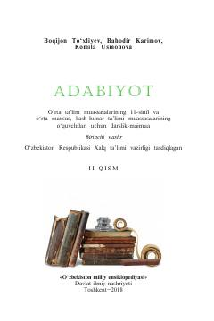

A111-sinf o'quvchilari uchun XX asr o'zbek va jahon adabiyoti darsligi.
Ushbu darslik-majmua umumiy o'rta ta'lim maktablarining 11-sinf o'quvchilari uchun mo'ljallangan bo'lib, XX asr o'zbek va jahon adabiyoti namunalarini qamrab oladi. Kitobda Abdurauf Fitrat kabi yozuvchilarning hayoti va ijodi, shuningdek, adabiy tahlillar va darslik materiallari keltirilgan.